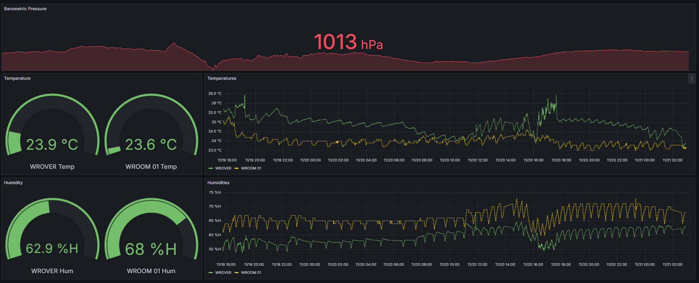
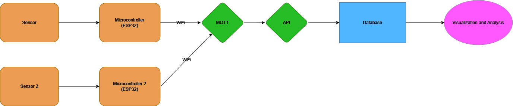
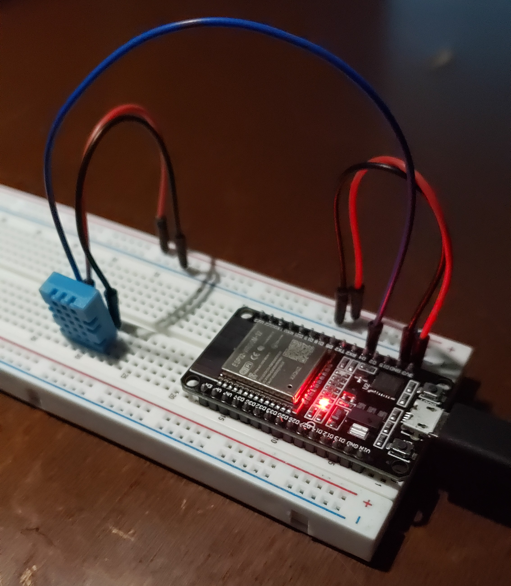
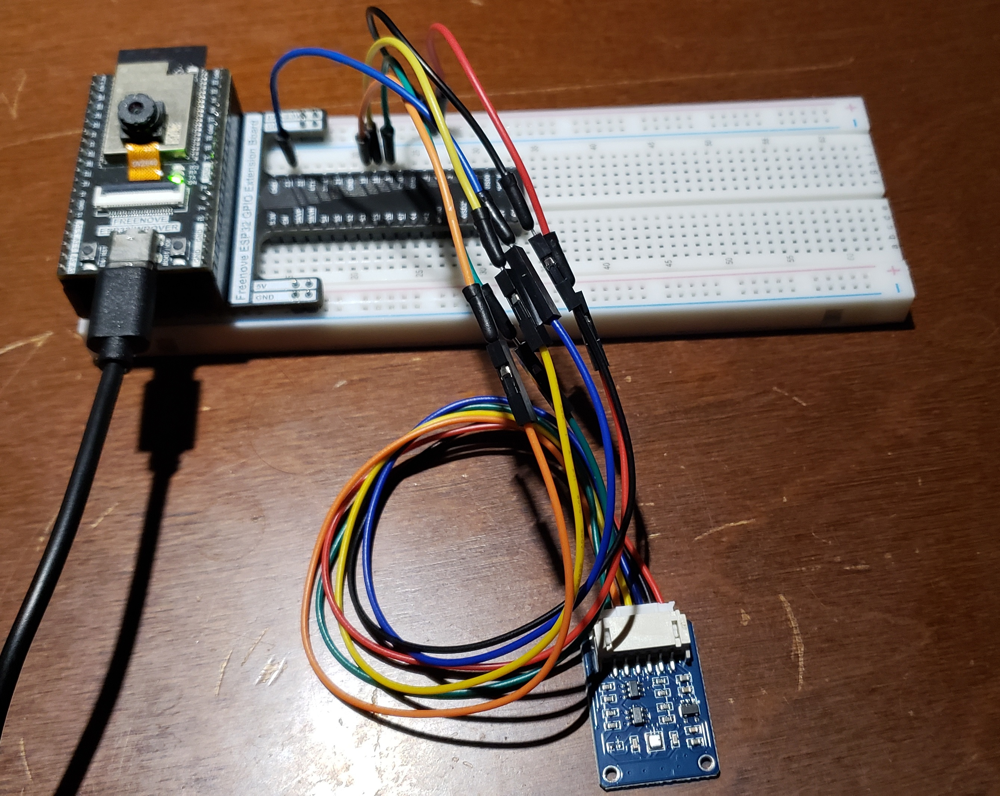

IoT Data Analytics Pipeline
From Sensors to Dashboards
Goal
It's clear that the number of smart devices is quickly multiplying, along with demands to analyze the data they produce. This is why companies are heavily investing in the Internet of Things, and that's why this project aims to build a system to harness that data
Process
A crucial feature of this project is adding more devices and their data flexibly. First, ESP32s send their data to a hub, where I transform, store, and display it
Results
1. Add new devices without updating schemas
2. Watch and analyze data in live dashboards
3. I can monitor my house for free

Project Overview:
This project shows a real-time Internet of Things(IoT) data pipeline, combining hardware, software, and visualization tools to capture, process, and analyze environmental data as efficiently and safely as possible by separating functions.
Why This Project?
This project helped me explore key tools and techniques in data engineering and embedded systems while also creating something modular and practical to monitor my house's air conditioning.
Skills learned in this project can be practically applied to monitor and maintain smart homes, gardens, and security applications
More broadly, these skills are useful to embedded systems, data engineering, data analysis, and data science roles
Key Features:
Table of Contents
System Design
This system was built to be flexible, scalable, and secure. Each part of the setup has a clear job, working together to capture data, process it efficiently, and show it in a way that's easy to understand. The focus was on making something that works well in real-time and can grow when new sensors or features are added later.
One potential application of this skills from this project is in a smart gardening system. Sensors can monitor soil moisture and sunlight levels, while weather data is integrated to predict rainfall. Based on these inputs, the system can decide when to activate sprinklers or deploy a tarp to protect crops from harsh conditions.

Data Flow
- Sensors: DHT11 and BME280 sensors measure environmental data
- Microcontroller: ESP32s sends JSON payloads via MQTT over WiFi to the API on my laptop
- Backend: FastAPI processes the data and stores it in InfluxDB bucket on laptop
- Visualization: Grafana queries the database and visualizes the metrics
Implementation
Approaching the project was an iterative process. I'd saved comma-separated values to an SD card and used Bluetooth in past projects and wanted to improve on data transmission protocols, data engineering principles, and security
I tackled this as an end-to-end project to explore new software tools, focusing on affordability, scalability and security. To this end I chose the technical stack and measures that I have.
Hardware
 - DHT11 Sensor: Measures temperature and humidity. Chosen because it's familiar and cheap
- BME280 Sensor: Measures temperature and humidity more accurately than the DHT11, as well as barometric pressure. Chosen because it's different and relevant
- Laptop: a good testing ground before moving to cloud services. Chosen because it's available and I wanted to work with open-source, local options
- ESP32 Microcontrollers: Reads sensor data, connects to WiFi and MQTT broker, sends data. Chosen because it's a relatively cheap and powerful edge device
- Device A: Captures data from a DHT11 sensor
- Device B: Captures data from a BME280 sensor, extendible to other sensors
Software
I wanted more experience with C++ and Python so I worked with those. I got a chance to work with JSON data, learning how to build and parse them in both languages
This snippet shows the ESP32 monitoring the interval since the last reading, the microcontroller reads sensor data only when needed. The readings are converted into a JSON object and sent to the MQTT broker, reducing unnecessary power usage and ensuring reliable messaging.
When the MQTT message is received, this snippet decodes the JSON payload, extracts the sensor data, and sends it to the database. It shows error handling to prevent data loss or crashes during parsing and insertion into InfluxDB.
This API endpoint provides a way to retrieve the most recent sensor data received by the server, simplifying debugging and validating sensor readings without directly accessing the database.
C++ Snippet: ESP32 Data Transmission Loop
void loop() {
// Check if the ESP32 is connected to the MQTT broker
if (!client.connected()) {
reconnect();
}
client.loop();
unsigned long currentMillis = millis();
// Check if it's time to publish data
if (currentMillis - lastPublishTime >= publishInterval) {
lastPublishTime = currentMillis;
// Read temperature and humidity from DHT11 sensor
float humidity = dht.readHumidity();
float temperature = dht.readTemperature();
// Check if the readings are valid
if (isnan(humidity) || isnan(temperature)) {
Serial.println("Failed to read from DHT sensor!");
return; // Skip the rest if the sensor readings are invalid
}
// Create JSON object with sensor data and metadata
StaticJsonDocument<200> doc;
doc["deviceID"] = device;
doc["sensorName"] = sensorName;
doc["temperature"] = temperature;
doc["humidity"] = humidity;
doc["timestamp"] = currentMillis; // Timestamp for when the data was read, additional logic optional like deep sleep
// Serialize the JSON object to a buffer
char jsonBuffer[512];
serializeJson(doc, jsonBuffer);
// Publish the data to the MQTT broker
Serial.print("Publishing message: ");
Serial.println(jsonBuffer);
if (client.publish(mqtt_topic, jsonBuffer)) {
Serial.println("Message published successfully!");
} else {
Serial.println("Failed to publish message.");
}
}
}
Python Snippet #1 (MQTT Message Handler)
# MQTT message handler
def on_message(client, userdata, msg):
global latest_sensor_data
try:
# Parse the JSON payload
sensor_data = json.loads(msg.payload.decode())
# Store the latest sensor data
latest_sensor_data = sensor_data
# Insert the parsed data into InfluxDB
asyncio.run(insert_data(sensor_data))
except Exception as e:
print(f"Error parsing message: {e}")
Python Snippet #2 (API Endpoint for Latest Data)
# API endpoint to latest reading
@app.get("/latest-data")
async def get_latest_data():
if latest_sensor_data:
return {"sensor_data": latest_sensor_data}
return {"message": "No data received yet."}
Protocols
Challenges & Solutions
- I faced repeated connection failures, possibly due to administrative rights or configuration conflicts
+ After exploring alternative MQTT broker installations, switching to a different package resolved the problem
- Synchronizing time data from sensors with the database proved inconsistent due to power and clock drift issues on the ESP32
+ Delegating timestamp generation to InfluxDB ensured precise, reliable time tracking
- Initial attempts to connect Grafana to InfluxDB failed due to mismatched naming conventions
+ With ChatGPT’s help and careful review of the Grafana documentation, I realized the issue was related to bucket IDs versus names and corrected the configuration
- After adding the BME280 to the pipeline, data flow from both ESP32s become inconsistent
+ Debugging led to setting up extra MQTT clients to handle additional nodes streaming data and success
FULL CODE AND WALKTHROUGH ON GITHUB
Results
Live Monitoring Using Insightful Dashboards: Sensor data from multiple ESP32 devices was transmitted via MQTT and visualized in real-time using Grafana, with a 10-second refresh rate. Grafana dashboards featured time-series graphs, gauge panels, and threshold markers, making trends like temperature fluctuations and light exposure easy to track at a glance.
System Efficiency & Scalability: Lightweight MQTT and asynchronous FastAPI processing ensured low latency and high responsiveness, even with multiple devices sending data. The modular design allowed seamless addition of sensors and integration with external APIs, such as weather services for smarter irrigation decisions. Cloud services can enhance that scalability
Tons of Practice: From tasks relevant to project planning, system design, data engineering, and data analysis, I had the pleasure to do it all at once and learn along the way. I feel so much more confident in setting up data pipelines, secure connections, and using unfamiliar technologies. I can't wait to expand on what I learned here.
Possible Future Improvements
- API Improvements: Enhance security and explore Node-RED for simplified data ingestion
- Threshold Alerts: Configure automated notifications for abnormal temperature or humidity levels
- Network Configuration: Enable remote access to Grafana dashboards for better accessibility
- Cloud Integration: Use cloud services like AWS Lamda, S3, and Glue
- Expanded Sensors: Add air quality, motion, or other environmental sensors for broader monitoring capabilities
Technical Stack
- Python: Chosen for its flexibility, readability, and extensive data processing libraries
- C++: Ideal for resource-efficient programming on microcontrollers.
- Mosquitto: Lightweight and reliable MQTT broker for efficient communication
- InfluxDB: Optimized for time series data, providing fast, precise storage and querying
- Grafana: Offers rich, customizable dashboards for real-time data visualization
- WiFi: Simplifies ESP32’s connection to wireless networks
- PubSubClient (Nick O’Leary) : A compact library for MQTT communication
- Adafruit BME280 (Adafruit): Provides reliable sensor interfacing with the DHT11
- DHT Sensor Library (Adafruit): Provides reliable sensor interfacing with the DHT11
- ArduinoJson (Benoit Blanchon): Facilitates lightweight JSON creation and parsing
- uvicorn: A fast ASGI server for deploying the FastAPI backend
- FastAPI: Enables quick and efficient development of RESTful APIs
- paho.mqtt: A robust library for MQTT messaging in Python
- influxdb_client: Simplifies database integration with InfluxDB
- json: Handles JSON parsing and serialization
- asyncio: Supports non-blocking, concurrent database interactions
- ESP32: Selected for its built-in Wi-Fi and Bluetooth capabilities, making it ideal for IoT applications requiring real-time data transmission
- DHT11: Chosen for its simplicity and affordability in measuring temperature and humidity in low-power projects
- BME280: Chosen for precision in low-power projects and as a complimentary sensor to DHT11
- MQTT: Chosen for its lightweight publish/subscribe model, ensuring efficient communication between devices in constrained environments
- HTTP: Utilized for interoperability with web-based APIs, providing a universal method for transmitting data over the internet
- Wi-Fi: Chosen for its widespread availability and ability to connect the ESP32 to cloud or local networks seamlessly